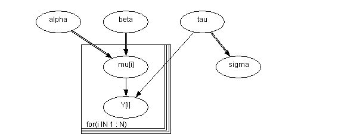

![[line0]](line0.bmp) Line: Linear Regression
Line: Linear Regression

model
{
for( i in 1 : N ) {
Y[i] ~ dnorm(mu[i],tau)
mu[i] <- alpha + beta * (x[i] - xbar)
}
tau ~ dgamma(0.001, 0.001) sigma <- 1 / sqrt(tau)
alpha ~ dnorm(0.0,1.0E-6)
beta ~ dnorm(0.0,1.0E-6)
}
Data ( click to open )
Inits for chain 1 Inits for chain 2 ( click to open )
Results
A 1000 update burn in followed by a further 10000 updates gave the parameter estimates